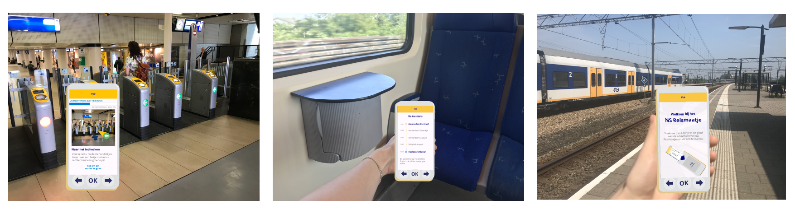

Werkzaamheden:
Projectduur: 10 weken
Voor het vak Project individueel 2 moest ik een onderzoek doen naar een bepaalde situatie en daarmee de user experience van een specifieke doelgroep verbeteren. Ik heb mij verdiept in de case: NS voor ouderen.
Design challenge: De NS wil reizen met de trein voor ouderen gemakkelijker en populairder maken. Ouderen vinden treinreizen en alles wat ermee te maken heeft vaak eng omdat ze het niet frequent doen. NS wil dat de ouderen door het product (met een voor hun logische interface) worden ondersteund, zodat ze zich geen zorgen hoeven te maken vanaf wanneer ze het station binnekomen over waar ze heen moeten en wat ze moeten doen om naar de juiste plek te reizen.
Bekijk hier mijn prototype: NS Reismaatje
Doormiddel van verschillende sub-deelvragen heb ik elke deelvraag geprobeerd te beantwoorden. Iedere sub-deelvraag heb ik onderzocht met een methode, bijvoorbeeld: usertrip, observatie, experience maps, deskresearch, moodboard, testplans en interviews.
Mijn user trip heb ik geprobeerd in kaart te brengen door middel van een experience map. Hieruit kwamen drie pijnpunten: het zoeken van het perron, op het perron haasten voor de trein en ouderen weten niet wanneer ze uit moeten stappen.
Ouderen hebben gemiddeld slechter zicht dan mensen uit andere bevolkingsgroepen. Juist daarom is het extra belangrijk dat het lettertype groot genoeg is en er genoeg contrast is tussen achtergrond en tekst.
Aan het moodboard kun je gelijk zien wat de primaire kleuren zijn van NS, geel en blauw. Deze kleuren zijn voor veel mensen herkenbaar, ook als mensen niet vaak met de trein reizen. Verder is het NS logo iconisch voor het Nederlandse Spoorwegen bedrijf. Deze kenmerken moeten ook terug komen in het uiteindelijke ontwerp.
Links zie je de style tile van de NS website, rechts van het NS Reismaatje. De verschillen liggen hem vooral in dat het contrast tussen de kleuren bij het Reismaatje iets groter zijn. Ook zijn de iconen en letters groter zodat ouderen alles goed kunnen lezen.
Tijdens het ontwerpproces zijn er verschillende iteraties gemaakt in de schermen op gebied van juiste communicatie en vormgeving.
Mijn ontworpen oplossing is het NS Reismaatje. Dit is een device in het formaat van een smartphone, dat ouderen begeleid van station tot station. De bedoeling is dat je het oppakt bij het vertrekstation en achter kunt laten bij het aankomststation. Wanneer je in de trein zit kun je op het device altijd zien waar de trein rijd, het apparaat gaat trillen als je aankomt bij jou eindhalte.
Bij het NS Reismaatje kunnen ouderen bij bijna elke stap op OK klikken om naar de volgende stap te gaan. In mijn onderzoek viel mij op dat ouderen bij keuzes snel in paniek raken, dus dit wilde ik voorkomen. De enige keuze die ze echt willen en kunnen maken is of ze met de trap, roltrap of lift willen.
